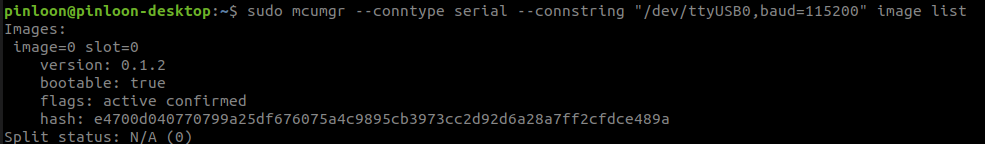
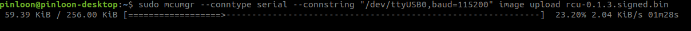
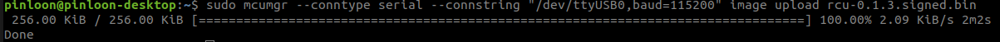
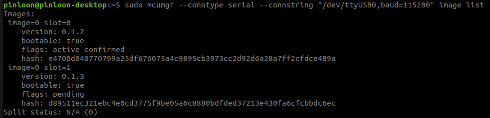
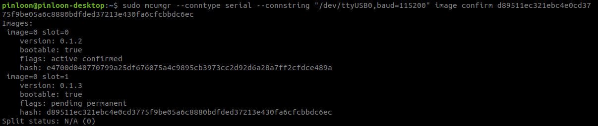
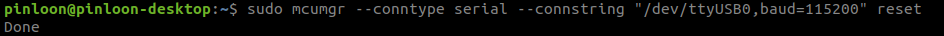
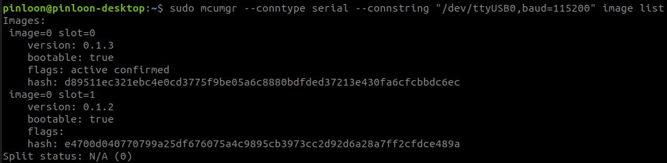

Scout V2.5 Robot¶
- To upgrade the firmware, please ensure you have the following items
Laptop running on Ubuntu18.04
USB to Micro USB cable
Signed binary image from Weston Robot
MCU Manager installed (kindly refer for the installation guide below)
Installation guide for MCU Manager (mcumgr)¶
Installation for Go.
$ sudo apt install golang-go
Verify whether Go is installed properly by the following command.
$ go version
Now you can install mcumgr CLI.
$ cd
$ go get github.com/apache/mynewt-mcumgr-cli/mcumgr
$ nano ~/.bashrc
Add in path for mcumgr into .bashrc file
$ export PATH=$PATH:<path-to-home-directory>/go/bin/
$ alias sudo='sudo env PATH=$PATH'
Verify whether mcumgr is installed properly by the following command.
$ source ~/.bashrc
$ mcumgr version
Troubleshooting
If the installed golang-go is an older version, the “go get…” command in step 3 might fail. To get around this error, manually install a newer version of go by following the instructions from golang’s website and reattempt installation from step 3.
Firmware upgrade using MCU Manager through USB cable¶
After you have installed mcumgr, now you should be able to upgrade the firmware through USB cable.
Connect your computer to the MicroUSB port on robot using USB to Micro USB cable.
Check on your computer for the device connected by the following command.
$ ls /dev
if there is only one USB device connected you should be able to see device named “ttyUSB0”, if there are more instances such as “ttyUSB1”, you can check the device using the following command.
$ sudo mcumgr <connection string> image list
The default connection string is
--conntype serial --connstring "/dev/ttyUSB0,baud=115200"
You should be able to see something like below

If you don’t get any response, replace the connstring to other USB instance appeared on your computer such as “/dev/ttyUSB1,baud=115200”.
Assuming your USB device appeared on your computer is “/dev/ttyUSB0”, you can upload the image with the following command.
$ sudo mcumgr <connection string> image upload <path-to-signed.bin>
Wait for about 3 seconds, you should be able to see something like below

Wait until the process is Done.

You can check whether the image is uploaded succesfully by the following command.
$ sudo mcumgr <connection string> image list

Copy the hash of latest image to be used in next step, in this example, it is
d89511ec321ebc4e0cd3775f9be05a6c8880bdfded37213e430fa6cfcbbdc6ec
Now confirm the image by running the following command
$ sudo mcumgr <connection string> image confirm <hash of image>

Reset by the following command
$ sudo mcumgr <connection string> reset

Wait for about 30 seconds and run the following command
$ sudo mcumgr <connection string> image list
You should be able to see the following

Now, you have upgraded the firmware successfully to a newer version.
After uploading the new firmware, if you would like to revert the previous firmware, the old firmware image should still be present in the board.
To revert to this old firmware, confirm this old image again by repeating the last few steps and reset the board.